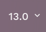
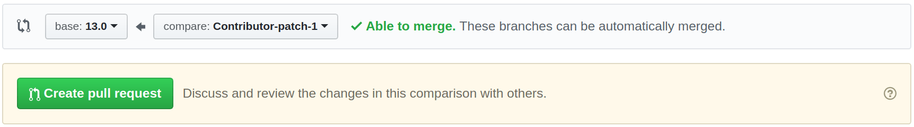
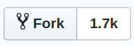
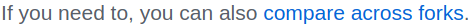
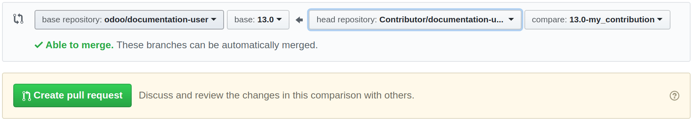

First of all, thank you for landing here and helping us improve the user documentation of Ibel!
This introductory guide will help you acquire the tools and knowledge you need to write documentation, whether you plan to make a minor content change or document an application from scratch.
Note
This tutorial only concerns the user documentation of Ibel. The documentation for developing in Ibel in maintained alongside the source code of Ibel at github.com/odoo/odoo.
reStructuredText
Our documentation is written in reStructuredText (RST), a lightweight markup language consisting of normal text augmented with markup which allows including headings, images, notes, and so on. This might seem a bit abstract but there is no need to worry. RST is not hard to learn, especially if you intend to make only small changes to the content.
If you need to learn about a specific markup, head over to our cheat sheet for RST which contains all the information that you should ever need for the user documentation of Ibel.
Getting started
As our documentation is maintained on GitHub, you will need a free GitHub account. Click here to create one.
Now, depending on whether you want to update existing content, or rather work on new content and make file changes, you have two courses of action:
- For small changes in
.rstfiles only, i.e. addition/edition of paragraphs or typos, we suggest that you use the GitHub interface. This is the easiest and fasted way to submit your request for changes for the documentation and is suitable for non-technical people. Read Use the GitHub interface to learn how to use this method. - For more complex cases, it is necessary to use Git and work from a local copy of the documentation. This method seems intimidating but only requires basic knowledge of Git. See Use the canonical Git workflow for more information on this method.
Use the GitHub interface
Verify that you are browsing the documentation in the version that you intend to change. The version can be selected from the dropdown in the top menu.
Head over to the page that you want to change and click on the Edit on GitHub button in the bottom of the left menu.
If you do not have edit rights on the repository (odoo/documentation-user), you need to fork it by clicking on the appropriate button. In other terms, you create a copy of the entire repository on your own account. If you do have the edit rights, skip this step.

- Make the appropriate changes while taking care of following the guidelines.
- Click on the Preview changes button to review your contribution in a more human-readable format. Be aware that the preview is not able to handle all markups correctly. Notes and tips, for instance, are not correctly rendered. The version of your content published to the website will be, however.
Go to the bottom of the page to create a commit (what packs your changes together and labels them with a commit message) of your changes.
- In first text box, describe your changes. For instance, “Fix a typo” and “Add documentation for invoicing of sales orders” are two clear commit messages.In the second text box, justify why you made these changes, if you feel that it is not obvious.
- Select the option “Create a new branch for this commit and start a pull request.” if you have the choice (if you have partial or full edit writes on the repository). If not, skip this step.
- Click on the green button. It is either labelled “Commit changes” or “Propose file change”.
In the dropdown for the selection of the base branch (i.e., the version of the documentation that your changes concern), make sure to select the same version as in the first step of this guide and click on the Create pull request button.
Double-check your PR and, when ready, click again on the Create pull request button to submit your changes for review by a redactor at Ibel.
- You’re done! If your changes are approved straight away they will appear in the documentation the very next day. It may also be the case that the reviewer has a question or a remark, so make sure to check your notifications or your emails, depending on your account settings.
Use the canonical Git workflow
Prepare your machine
Install Git
We use Git to manage the files of the user documentation. It is a tool that allows to track the history of changes made to a file and, more importantly, to work on different versions of those files at the same time. It means that you do not need to worry about overwriting someone else’s pending work when you start editing the documentation.
You must then configure Git to identify yourself as the author of your future contribution. Enter the same email address as the one you used to register on GitHub.
- Download and install Git on your machine.
- Verify that the installation folder of Git is included in your system’s PATH variable.
Execute the following commands in a terminal:
$ git config --global user.name “Your Name” $ git config --global user.email “youremail@example.com”
Fetch the sources
As stated earlier, our documentation (in all its versions) is maintained on GitHub at github.com/odoo/documentation-user. A modification is made by the mean of a PR (proposal of content changes) to allow for a review of the changes before updating the sources of the documentation.
Prior to submitting a modification, you need to make a copy of the sources and download that copy on your machine.
Go to github.com/odoo/documentation-user and click on the Fork button in the top right corner.
Execute the following commands in a terminal:
$ git clone https://github.com/odoo/documentation-user $ cd documentation-user/
Important
If you do not have edit rights on the repository owned by Ibel, replace “odoo” with your Github username in the URL of the command above. If you do have edit rights, it is not necessary to fork the repository.
In order to ease the collaboration between writers coming from many different systems and teams, execute the following group of commands that correspond to your OS in a terminal.
Windows:
$ cd documentation-user/ $ git config --global core.autocrlf true $ git config commit.template %CD%\commit_template.txt
Linux or Mac OS:
$ cd documentation-user/ $ git config --global core.autocrlf input $ git config commit.template `pwd`/commit_template.txt
Python
Because the documentation is written in RST, it needs to be built (converted to HTML) in order to display nicely. This is done by the documentation generator which takes the original RST files as input, transforms the markups in a human-readable format, and outputs HTML files to be read in your web browser.
The documentation generator that we use is called Sphinx. and is written in Python. You have to install Python in order to use Sphinx. For the record, Sphinx is the program and Python the programming language, but you do not need to know much more about them so don’t panic!
Python comes with its own package manager: pip. It allows installing Python dependencies in a single command.
- Download and install the latest release of Python 3 on your machine.
- Make sure to have pip installed on your machine (on Windows, you can install pip alongside Python).
Execute the following commands in a terminal to verify that both installations finished successfully:
$ python3 --version $ pip3 --version
Execute the following commands in a terminal to install the Python dependencies of the documentation:
$ cd documentation-user/ $ pip3 install -r requirements.txt
Note
Depending on your OS, you may need to run the commands python and
pip instead of python3 and pip3
Make
Make is a tool that packs a bunch of command-lines into one to be easier to remember and to type. In our case, it is used to execute complex Sphinx build commands by using a single and simpler one instead.
- Download and install Make on your machine.
- Verify that the installation folder of Make is included in your system’s PATH variable.
pngquant
pngquant is a tool that we use to compress PNG images so that the documentation does not end up weighting several Gigabytes in a few year span.
- Download and install pngquant on your machine.
- Verify that the installation folder of pngquant is included in your system’s PATH variable.
Prepare your version
Now that your machine is all set up, it is time to do the same for your version of the documentation
files. As it would not be convenient to have several people working on the version 14.0 in parallel
(conflicts of content would occur all the time), and in order to be able to create a PR, you must create a new branch starting from the branch 14.0. In other
words, you copy the entirety of this version’s files and give it another name. For this example, we
will go with 14.0-my_contribution.
Execute the following commands in a terminal to…
Navigate to the documentation folder:
$ cd documentation-user/
Switch to the version 14.0:
$ git checkout 14.0
Create your own branch which will be a copy of 14.0:
$ git checkout -b 14.0-my_contribution
Perform your changes
You can now perform any change you want to the documentation files. These changes must be compliant with RST syntax (see RST cheat sheet) and with our guidelines.
Important
If your changes include the addition of a new image, for instance my_image.png, proceed
as follows:
- Make sure that the image is in
.pngformat. Execute the following commands in a terminal:
$ cd path-to-the-directory-of-the-image/ $ pngquant my_image.png
- Delete
my_image.png. - Rename
my_image-fs8.pngtomy_image.png.
Preview your changes
To preview your changes in a generated documentation, proceed as follows:
Execute the following commands in a terminal:
$ cd documentation-user/ $ make clean $ make html
Tip
You can omit the make clean command when no recent change has been made to the hierarchy of documentation files.
- Fix any error or warning shown in the logs of the build.
- Open the file
documentation-user/_build/html/index.htmlwith your default web browser.
Note
These steps have for only purpose to show you the final results of your changes. They have no impact on the documentation source files.
Submit your changes
Important
We expect you to have basic knowledge of Git, which should be enough to cover the basic flow of a one-time contribution. If you plan on submitting several contributions, work on older versions of the documentation or perform any other advanced action, we recommend you to be confident with Git. Help yourself with this manual of Git and this interactive tutorial.
Execute the following commands in a terminal:
$ git add * $ git commit $ git push -u origin 14.0-my_contribution
Go to github.com/odoo/documentation-user/pulls and click on the New pull request button.
If you forked the base repository in the section Fetch the sources, click on the link compare across forks If not, skip this step.
In the dropdown for the selection of the base branch (i.e., the version of the documentation that your changes concern), make sure to select the version that your changes target (here 14.0).
Double-check your PR and, when ready, click again on the Create pull request button to submit your changes for review by a redactor at Ibel.
- You’re done! If your changes are approved straight away they will appear in the documentation the very next day. It may also be the case that the reviewer has a question or a remark, so make sure to check your notifications or your emails, depending on your account settings.